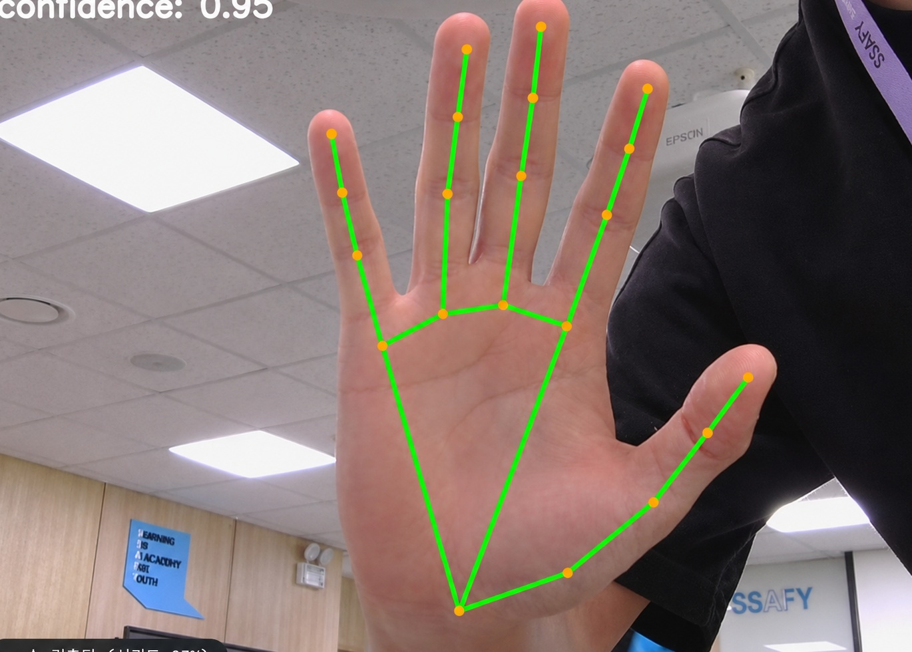
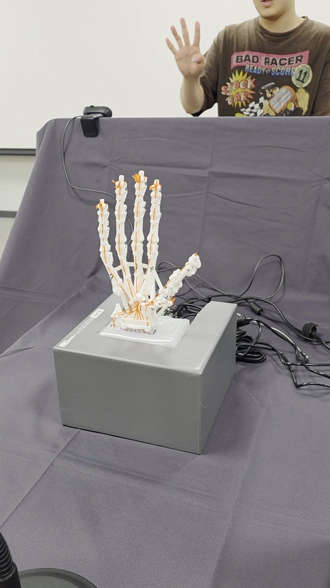
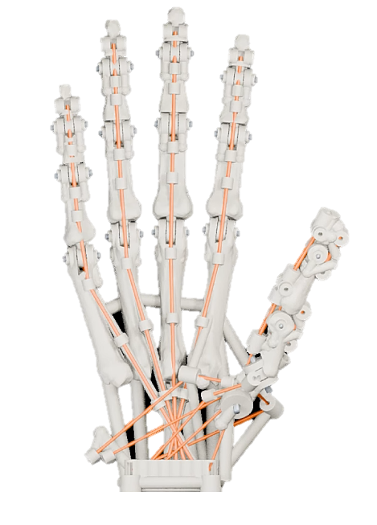
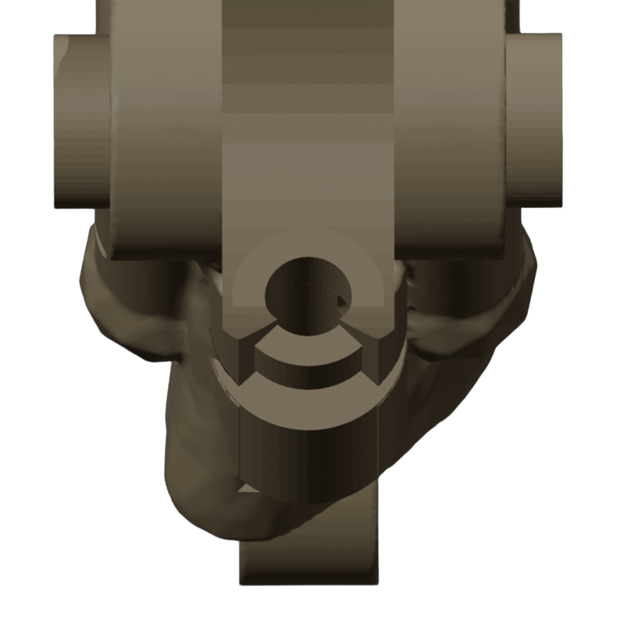
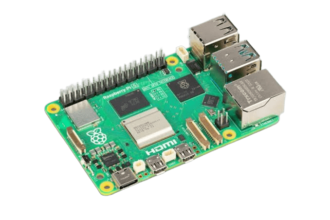
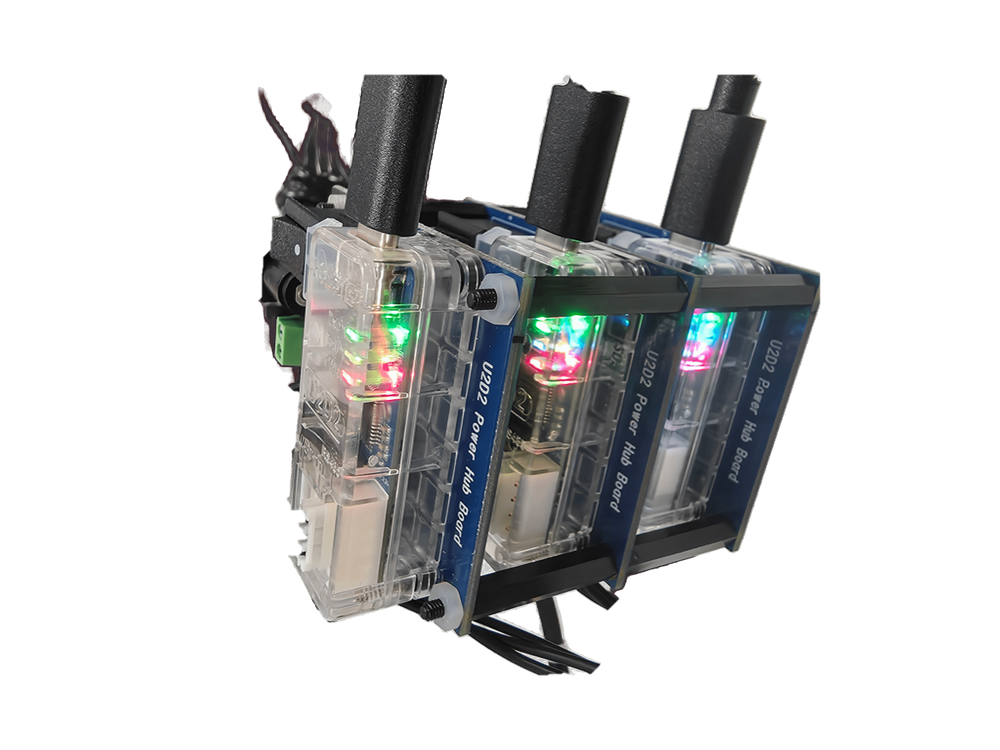
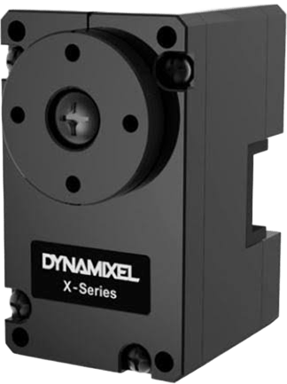

Tendon-Driven 7-Axis Robotic Hand with Real-Time Motion Imitation
공세민 · 김기현 · 백지웅 · 신수진 · 윤정민 · 이정빈
01 / ROBOT HAND
Motion imitation & object grasping

Human hand · 21 landmarks detected by camera

Robot hand · motion imitation demonstration
From motion to commands
21
Hand landmarks
Detect wrist and finger-joint positions.
7
Normalized control axes
Three thumb axes and four finger-flexion axes.
7
Actuation motors
Pull tendons to move the fingers.
Hand mechanism design

Coupled finger joints
An underactuated mechanism couples several joints through one tendon. The joint connections allow finger flexion while limiting backward motion.

Tendon routing and guides
The tendon runs through guides on the finger segments. Its route is designed to transmit pulling force into finger flexion.
Control uses calibrated motor positions. Motor position alone does not uniquely determine the individual joint angles of the tendon-coupled fingers; joint-angle feedback is not used.
Calibrate the user’s motion range and map each control axis to a value from 0 to 1.
Thumb FlexionThumb OppositionThumb AbductionIndex FlexionMiddle FlexionRing FlexionLittle Flexion
Stabilize commands with a deadband, EMA smoothing and change-rate limiting. The seven values are normalized actuation commands, not joint angles.

Raspberry Pi 5
ROS 2 input · motor driver
03 / GENERATE MOTOR POSITIONS
7-axis targets → motor positions
Validate commands and apply per-motor calibration.
Index: u → 1740 + u × (4300 − 1740)
Example from the configuration · position unit: raw ticks The thumb uses a separate pose mapping.

U2D2 · Hub × 3

DYNAMIXEL × 7
USB → motor communication → rotation
04 / ACTUATE THE HAND
Motor rotation → tendon pulling
Seven motors on three buses pull tendons to move the fingers.
BUS A · 3 motors / BUS B · 3 motors / BUS C · 1 motor
XL330-M288-T · 3 thumb axes + 4 finger axes
Hand landmarks ＋ Target commands ＋ Motor status → Session recording & review
Turning hand motion into robot movement
THING converts camera-observed hand motion into seven control commands and actuates a robotic hand through motors and tendons. The project brings mechanical design, vision and motor control together to demonstrate motion imitation and object grasping.